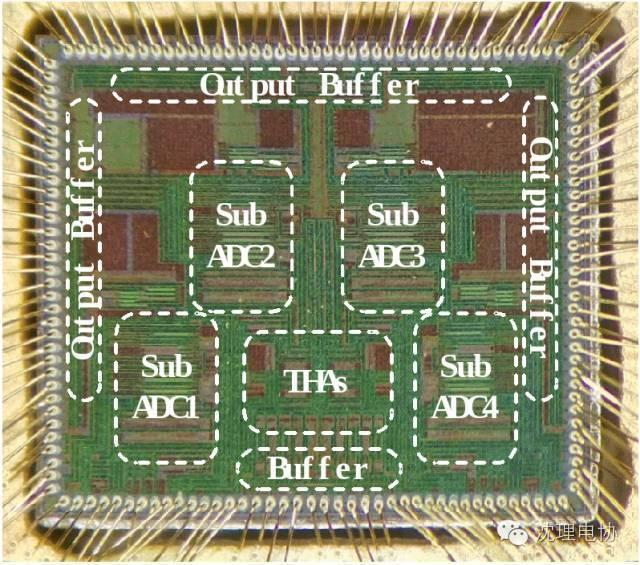
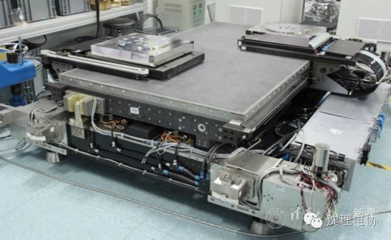

新闻大爆炸 | 微电子所成功研制30GS/s超高速数据转换器

中国科学院微电子研究所于2006年在研究员刘新宇带领下成立了超高速数模混合电路研发团队，经过近10年的技术积累，团队在超高速ADC/DAC的研究工作取得了突破性进展，成功研制出超高采样率、 宽频带的30GS/s 6bit ADC/DAC芯片，大大缩短了与先进国家的技术差距，为我国在该领域摆脱国外技术壁垒限制增加了关键性的筹码。30 GS/s 6bit ADC芯片面积为3.9mm x 3.3mm ，采用4路交织技术，子ADC采用自主创新的折叠内插架构。30 GS/s 6bit DAC的芯片面积为3mm x 2.8mm，采用了分段式电流舵DAC架构。目前，该芯片已在武汉邮电科学院构建的1Tb/s相干光OFDM传输验证平台上实现应用验证。
清华成功研发光刻机双工件台系统样机

专家组认为，历经5年攻关，研究团队研制出2套光刻机双工件台掩模台系统α样机，关键技术指标已达到国际同类光刻机双工件台水平，并获得专利授权122项，为后续产品研发和产业化打下了坚实基础。
微软或将把诺基亚品牌出售给富士康
据外媒报道，因功能手机销量不好，微软决定关停功能手机业务，消息人士还透露，微软还计划把诺基亚品牌的使用权卖给富士康。
谷歌搜索也被查，欧盟开出天价罚单
知情人士透露，欧盟委员会的官员将在夏季休会前公布最终调查结果。处罚决定可能最早于6月初公布，但金额仍未最终确定。除了面临天价罚单，谷歌将被禁止继续操纵损人利己的搜索结果。

信息部/黄志勇